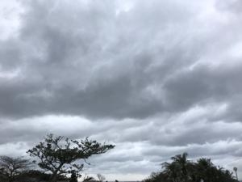
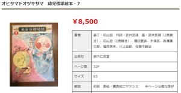

うるがいの話 ある日
最新: 予約できた【うるがいの話 ある日】とは 一日だけのプログです
『うるがいの話』の最新一日だけのプログで、通信料が少なく経済的だ。カニの画像をクリックすると全ての日付が載る『うるがいの話』サイトを表示します
|
|
【うるがいの話】 うるがい(ｳﾙｶﾞｲ urugai)とは、『もずくがに』の名前でとても大きくなります。 |
|---|---|
|
|
【カミマヤーの話】 猫のことを方言でマヤーといいます。カミマヤー（kamimayaa）とは、神の猫のことです。 |
|
【たながぁの音楽】 たながぁ（ﾀﾅｶﾞｰ tanagaa）とは手長えびのことで、何種類かあり大きいのは車 エビぐらいになります。 |

|
【ぶながぁの話】 ぶながぁ(ﾌﾞﾅｶﾞｰ bunagaa)とは、赤い髪の毛、赤い身体、そして身長は１ｍ２０ｃｍ ぐらい、川の蟹を食べているの目撃された。場所は沖縄県国頭郡大宜味村のと ある村僕の隣近所に住んでいる爺さんから、聞いた話です。 |
|
|
【ギーマの話】 ギーマ(giima)とは、山原の里山に咲くスズランに似た、 花を付けます。実は食べられます、 気が付くと口の周りが紫になっています。 |
2023年02月16日 (木）予約できた
17:11

夜空はなぜ暗い?―オルバースのパラドックスと宇宙論の変遷
著エドワード・ハリソン 初版第印刷 2004/11/20 より引用
監訳者あとがき
->監訳者 長沢 工（ながさわ こう、1932年7月24日 - 2019年10月28日）は、
日本の天文学者。
子供のとき、私の家に一冊の絵本があった。１９４０年前後のことである。「
オヒサマトオツキサマ」と題されたその本は、人々の生活に関係する太陽と月
の働きを、特徴的な絵と、調子のよい七五調の文で述べたものであった。おそ
らく十数頁の本であったろうが、そこには潮汐が月の作用で生じることまで書
かれていた。いま考えても、まことに優れた絵本であったと思われる。私は何
度も読み返し、いつしかそのかなりの部分を暗記してしまった。その後年月が
経ち、転居を繰り返すうちに、その絵本は失われ、残念ながら、いまではもは
やその著者や出版社を知るすべもない。
その絵本の最初の頁には、画面いっぱいに大きな地球があり、その半分は明る
く太陽に照らされ、残り半分が影になっていて、昼と夜の生じる理由が描かれ
ていた。うろ覚えであるが、説明はおよそ次の文章であった（原文は全部カタ
カナ）。
カッチカッチブーン、ポーとサイレンお昼だね、
カーオ、カーオ、もう日が暮れる
どうしてだろう昼と夜
それはぼくらが乗っている
地球がぐるぐる回るのさ おてんとさまに向けば昼
背中向ければ夜なのさ
そーら来た来たこんばんは
誰だか知ってるお客様
それはね、おっ月さまなのさ
太陽をおてんとさま(お天道さま)と呼んでいるのも懐かしい。そして、ここか
ら誰でも、地球が自転すること、太陽に背を向ければ暗い夜が来ることを読み
取ることができた。「昼と夜」というと、 私はいつもこの文章を思い出す。
２カ月程かかってやっと完読した本のあとがきである。監訳者が恐らく小学生
の頃だと思うが、凄い記憶である。あとがきでは、「著者や出版社を知るすべ
もない」とあったがネットで調べるとそれらしき古書が、ある。８、５００円

那覇市立図書館が、今日から予約が可能となった。早速、ＤＴＭの本と琉球箏
（りゅうきゅうそう）の本を予約する。『かぎやで風』の演奏に、琴の音も入
れようかと思って、・・。あれって、琴ではなく箏という漢字をあてるらしい
ややこしいことに読みは、『コト』とのこと。ふーん。
１７時０５分 ビットコインの総資産 ￥９、５１８（↑９８７、凄い）